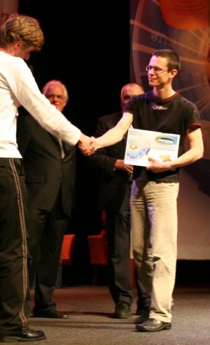

Uitdager: Alexander Georgiev uit Sint Petersburg
Alexander Georgiev is op 17 juli 1975 in Sint Petersburg geboren en begon op zevenjarige leeftijd met dammen. Zijn eerste trainer was Swetnikov.Tot zijn twaalfde speelt hij op het 64-velden bord, maar daarna alleen nog op het 100-velden bord. Hij volgt damlessen bij de bekende trainer Sergei Mansjin. Deze was tevens trainer geweest van o.a. Dibman en Korenewski.
Georgiev werd in 1990 als vijftienjarige al kampioen van Leningrad (nu Sint Petersburg) bij de heren. Een fragment uit dat kampioenschap staat hieronder.Tussen 1992 en 1994 wordt hij drie keer wereldkampioen bij de jeugd. Georgiev wordt in 1994 voor het eerst Russisch kampioen. Dit herhaalt zich in 1995, 1997, 2000, 2002, 2005, 2006, 2007 en 2009. Hij wordt Europees kampioen in Polen 1995 en in 2006 opnieuw in Slovenië. In 1999 wordt hij de eerste wereldkampioen Rapid-dammen in Nederland.
Georgiev wordt in 2000 met het Russisch team kampioen bij de WK voor landen teams in Londen, in 2005 in Italië en in 2006 in Senegal. Georgiev wint in 2002 de Challenge Mondial en mag wereldkampioen Tsjizjov uitdagen. Hij verslaat Tsjizjov in de WK-match van 2002 die in Ufa werd gespeeld. In 2003 blijft hij wereldkampioen tijdens het WK Dammen te Zwartsluis. Georgiev verslaat Tsjizjov opnieuw in de WK-match van 2004. In 2005 wordt hij de eerste wereldkampioen blinddammen in Nederland. Geen match gespeeld in 2006 i.v.m. de weigering van Tsjizjov. Georgiev wint in 2008 de eerste World Mind Sports Games in Peking. Bovendien won Georgiev daarnaast nog een groot aantal internationale toernooien.
Georgiev is internationaal grootmeester, zijn FMJD-rating bedraagt momenteel: 2442. Hij bezet daarmee de tweede plaats achter Ton Sijbrands.
 Een fragment uit de partij tussen Georgiev en Leontiev (Leningrad 1990). Georgiev speelde de lokzet 24.30-24. Leontiev dacht via de volgende standaard-combinatie te winnen: 24... 14-20 25.25x14 04-09 26.14x03 12-18 27.03x32 28x46. Georgiev vervolgde echter 28.38-32 46x28 29.26-21 16x27 30.36-31 27x36 31.24-19 23x14 32.47-41 36x38 33.43x01!+
Een fragment uit de partij tussen Georgiev en Leontiev (Leningrad 1990). Georgiev speelde de lokzet 24.30-24. Leontiev dacht via de volgende standaard-combinatie te winnen: 24... 14-20 25.25x14 04-09 26.14x03 12-18 27.03x32 28x46. Georgiev vervolgde echter 28.38-32 46x28 29.26-21 16x27 30.36-31 27x36 31.24-19 23x14 32.47-41 36x38 33.43x01!+
")
")
")